LinearModelFactory¶
-
class
LinearModelFactory(*args)¶ Class used to create a linear model from numerical samples.
Available usages:
LinearModelFactory()See also
Notes
This class is used in order to create a linear model from numerical samples. The linear regression model between the scalar variable
 and the
and the  -dimensional one 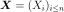 writes as follows:
-dimensional one 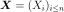 writes as follows: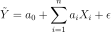
where
 is the residual, supposed to follow the standard Normal
distribution.
is the residual, supposed to follow the standard Normal
distribution.Each coefficient
 is evaluated from both samples 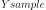 and
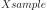 and is accompagnied by a confidence interval and a p-value (which
tests if they are significantly different from 0.0).
is evaluated from both samples 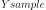 and
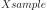 and is accompagnied by a confidence interval and a p-value (which
tests if they are significantly different from 0.0).This class enables to test the quality of the model. It provides only numerical tests. If
 is scalar, a graphical validation test exists, that draws
the residual couples 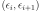, where the residual
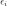 is evaluated on the samples :
is scalar, a graphical validation test exists, that draws
the residual couples 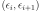, where the residual
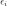 is evaluated on the samples :
 with
. The method is
with
. The method is
VisualTest_DrawLinearModelResidual.Methods
build(*args)Build the linear model from numerical samples. -
__init__(*args)¶ Initialize self. See help(type(self)) for accurate signature.
-
build(*args)¶ Build the linear model from numerical samples.
Available usages:
build(Xsample, Ysample)
build(Xsample, Ysample, level)
Parameters: - Xsample : 2-d sequence of float
Input sample, of dimension
 .
.- Ysample : 2-d sequence of float
Output sample, of dimension 1.
- level : positive float

The level value of the confidence intervals of each coefficient of the linear model, equal to 0.95 by default.
Returns: - linearModel :
LinearModel The linear model built from the samples : , where
is the
random residual with zero mean.
See also
Examples
>>> import openturns as ot >>> ot.RandomGenerator.SetSeed(0) >>> distribution = ot.Normal() >>> Xsample = distribution.getSample(30) >>> func = ot.SymbolicFunction(['x'], ['2 * x + 1']) >>> Ysample = func(Xsample) + ot.Normal().getSample(30) >>> LMF = ot.LinearModelFactory() >>> linearModel = LMF.build(Xsample, Ysample) >>> print(linearModel) LinearModel name=Unnamed regression=[1.1802,2.0034] confidence intervals=[0.887852, 1.47256] [1.70439, 2.3024] p-Values=[1.87486e-07,5.10531e-12]
-